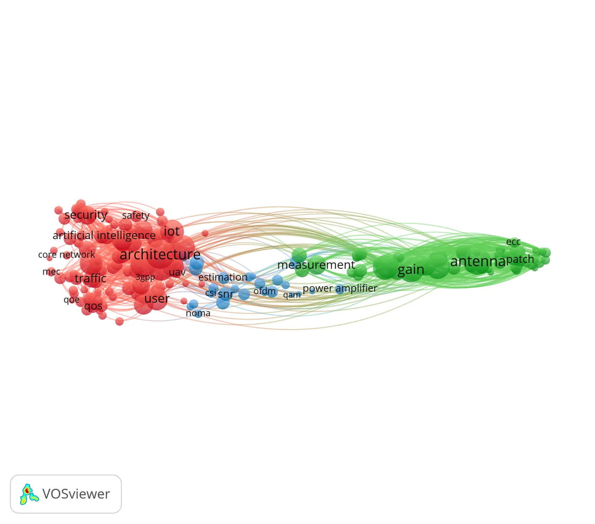
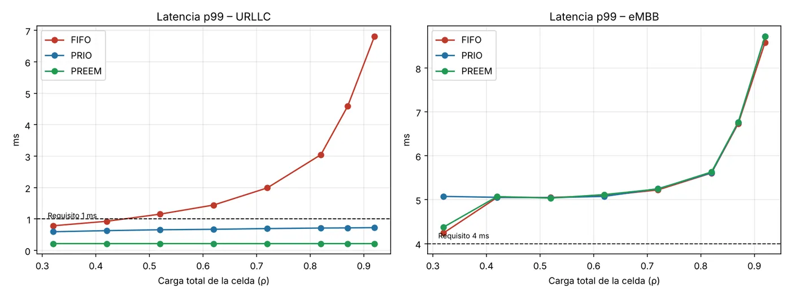
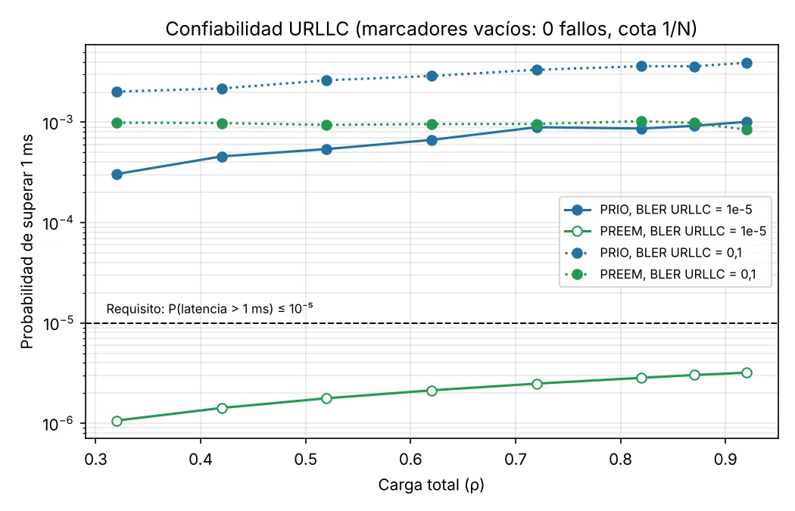
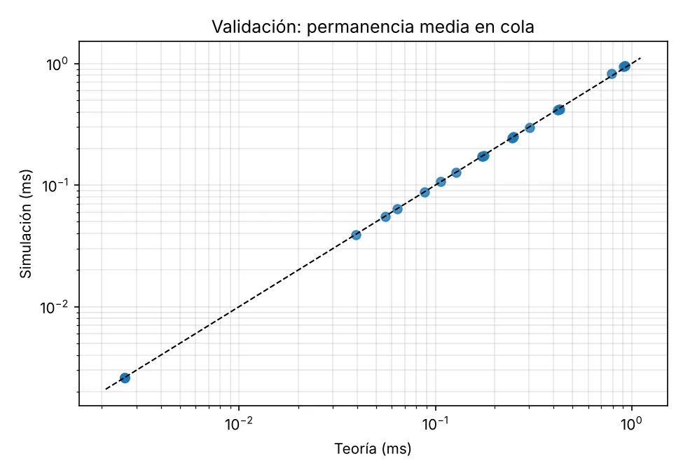

Reto ABET SO7 · Comunicaciones II (27145) · UIS · Grupo 2
5G, leído en 20 000 artículos
“La presente Divulgación Pública de la Ciencia, a través del siguiente Desarrollo Web, tiene una ruta de circulación nacional sin enfoque diferencial y está dirigido a la comunidad o público objetivo conformado por jóvenes, adultos, empresarios y/o empresa en género literario informativo de tipo Blog, con componente digital a través de soporte web”.
Mapeamos con VOSviewer qué investiga hoy la literatura científica sobre 5G y simulamos una pregunta concreta: ¿cómo puede una misma red entregar video en alta definición (eMBB) y, al mismo tiempo, mensajes críticos en menos de 1 ms (URLLC)?
Arriba: la rejilla de recursos de 5G. Cada columna es un intervalo de tiempo y cada fila una porción del espectro. Los bloques ámbar son mensajes URLLC que interrumpen la transmisión de banda ancha. Es la idea que pusimos a prueba en el mini-caso.
Qué es 5G, en palabras sencillas
Cada generación de telefonía móvil resolvió un problema: 2G llevó la voz digital, 3G trajo internet al celular y 4G lo hizo rápido. 5G no es solo «4G más rápido»: está diseñada para tres tipos de servicio muy distintos, definidos por la Unión Internacional de Telecomunicaciones en el informe ITU-R M.2410 [1].
El reto es que los tres comparten la misma rejilla de tiempo y frecuencia. Si un mensaje URLLC (por ejemplo, la orden de frenado de un robot) tiene que esperar a que termine una descarga de video, llega tarde. Prueba tú mismo:
Pulsa «Enviar paquete URLLC».
La demo usa tiempos ilustrativos (un paquete eMBB de 1500 bytes tarda 0,12 ms en un enlace de 100 Mbit/s). Los resultados con tráfico aleatorio y todas las cifras reales están en el mini-caso.
Cómo hicimos el estudio
Seguimos el procedimiento del Anexo A de la guía: una búsqueda en Scopus, un mapa de co-ocurrencia de términos en VOSviewer 1.6.21 [5] y una depuración manual con criterios explícitos.
Búsqueda y criterios
| Criterio | Decisión | Justificación |
|---|---|---|
| Cadena | "5G" | Tema asignado al Grupo 2; la cadena amplia captura todas las líneas de investigación. |
| Años | 2016–2025 (filtro) | Rango recomendado por el Anexo A. Por el tope de exportación, el CSV contiene documentos de 2024 a 2027 (ver limitaciones). |
| Tipo de documento | Artículo y ponencia de conferencia | Literatura revisada por pares; se excluyen editoriales, notas y libros. |
| Campos para el mapa | Título y resumen | Opción «text data» de VOSviewer; captura el lenguaje real de los autores. |
| Conteo | Binario | Un término cuenta una sola vez por documento, aunque se repita. |
| Registros exportados | 20 000 (10 048 artículos, 9 952 ponencias) | Máximo de exportación CSV de Scopus. |
Del texto a 172 términos
El Anexo A pide escoger el mínimo de ocurrencias con el que un número de términos igual o muy cercano a 500 supere el umbral. Probamos varios valores: con 168 ocurrencias pasan 498 términos. Antes de contar unificamos 38 sinónimos con un thesaurus (por ejemplo, millimeter wave → mmwave).
Depuración manual: términos eliminados
De los 299 términos seleccionados por relevancia quitamos 127, y cada uno tiene su criterio. Sin esta limpieza, el análisis habría girado alrededor de palabras como approach, model o challenge en lugar de 5G.
| Término | Ocurrencias | Criterio |
|---|
Las capturas de la configuración de VOSviewer (umbral, selección por relevancia y verificación de términos) se entregan como evidencia en el informe escrito, como indica la guía del reto. Aquí se presentan sus resultados en el embudo y en la tabla de términos eliminados.
El mapa: tres conversaciones sobre 5G
Cada círculo es un término y su tamaño indica en cuántos documentos aparece. Las líneas unen términos que aparecen juntos, y su grosor es la fuerza de asociación. VOSviewer agrupó los 172 términos en tres clústeres.

Mapa conceptual interactivo
Aquí están las 20 palabras que analizamos y sus 10 enlaces más fuertes. Arrastra los nodos, acerca o aleja con la rueda del ratón y haz clic en una palabra para ver sus datos y saltar a su análisis.
Red y servicios Antenas y RF Capa física · el grosor de la línea es la fuerza de asociación
Análisis de 200 enlaces
Aplicamos el «Teorema ZamoraCluster» del Anexo A para repartir el análisis por igual. Con C = 3 clústeres, W = ⌊20/3⌋ = 6 palabras por clúster y quedan R = 200 − 180 = 20 enlaces, es decir, k = 2 palabras extra. Resultado: 7 palabras en el clúster 1, 7 en el clúster 2 y 6 en el clúster 3, cada una con sus 10 enlaces más fuertes. Elegimos las palabras por número de ocurrencias y pertinencia directa para 5G.
| # | Palabra | Clúster | Ocurrencias | Enlaces | Fuerza total | Enlace más fuerte |
|---|
Tendencias en el corpus
Contamos en cuántos documentos de cada año aparece cada subtema (en el título o el resumen). Como el corpus está concentrado en 2024–2027, las gráficas muestran qué peso relativo gana cada tema en la literatura más reciente, no la evolución de toda la década.
Generador de visualizaciones
Escribe lo que quieres ver y el blog arma la gráfica. Por ejemplo: «compara 6G e IA en líneas», «total de documentos por subtema en barras» o «evolución de URLLC y network slicing».
El generador interpreta tu petición con reglas de lenguaje natural (subtemas, tipo de gráfica y métrica) sobre los datos reales del corpus.
Mini-caso: ¿pueden convivir eMBB y URLLC?
El análisis mostró que el enlace más fuerte de urllc es embb (fuerza 277), y que a su alrededor aparecen reliability, network slicing y resource allocation. Convertimos esa relación en una pregunta de ingeniería y la respondimos con un simulador propio en Python (código y README en el repositorio).
Objetivo
Verificar si un scheduler simple de una celda 5G puede cumplir a la vez 1 ms para URLLC y 4 ms para eMBB, los requisitos de ITU-R M.2410 [1], y qué política lo logra cuando sube la carga.
Hipótesis
- Con una sola fila (FIFO), URLLC supera 1 ms en cargas moderadas.
- La prioridad simple mejora la media pero no alcanza el 99,999 %.
- La apropiación con una codificación robusta (BLER 10⁻⁵) sí lo logra, con un costo pequeño para eMBB.
Método y supuestos
- Simulación de eventos discretos: enlace de 100 Mbit/s, llegadas Poisson, paquetes de 1500 bytes (eMBB) y 32 bytes (URLLC), carga URLLC de 0,02 y carga eMBB de 0,30 a 0,90.
- Capa 5G NR: alineación al slot de 0,5 ms (eMBB) o al mini-slot de 2 símbolos (URLLC) a 30 kHz, más procesamiento y retransmisiones HARQ según la BLER.
- KPI: latencia media y percentil 99, jitter, throughput, BLER y porcentaje de paquetes dentro del requisito. Semilla fija 2026.
- Validación: el simulador reproduce las fórmulas de teoría de colas (Pollaczek–Khinchine, Cobham, prioridad apropiativa) con error mediano de 0,55 % [6], [7].
Simulador interactivo de resultados
Mueve la carga de la celda y cambia la codificación de URLLC para explorar los resultados que produjo el simulador.
Resultados



Discusión y decisión de ingeniería
La prioridad simple mantiene la latencia p99 de URLLC por debajo de 1 ms, pero entre 0,03 % y 0,1 % de los paquetes siguen llegando tarde porque esperan a que termine el paquete eMBB en curso. Solo la apropiación, que 5G NR permite mediante la indicación de apropiación (DCI 2_1) [2], combinada con una BLER de 10⁻⁵, deja la probabilidad de fallo por debajo de 10⁻⁵, y a eMBB le cuesta como máximo 0,03 ms de latencia media. Recomendación: separar los servicios (nunca una cola FIFO común), habilitar la apropiación y usar una MCS robusta para URLLC. Si la carga URLLC creciera, convendría una rebanada dedicada (network slicing).
Limitaciones y próximos pasos
El modelo no representa la pérdida real de los recursos eMBB «perforados», usa la BLER como parámetro y considera una sola celda. Los siguientes pasos serían obtener la BLER de curvas BLER–SNR (MATLAB 5G Toolbox) y estudiar varios usuarios y canal 3GPP con NS-3.
Pon a prueba lo que leíste
Seis preguntas con las cifras reales del estudio.
Pregunta guía y plan de aprendizaje
Estrategias
Cronograma
Riesgos y cómo los manejamos
| Riesgo | Respuesta |
|---|
Reflexión metacognitiva
Lecciones para la práctica profesional
Equipo
Grupo 2 del laboratorio de Comunicaciones II (27145), Escuela de Ingenierías Eléctrica, Electrónica y de Telecomunicaciones, Universidad Industrial de Santander. Profesor: Ronald Zamora Musa.
Presentación en video
Fuentes consultadas
Artículos del corpus más citados (temas de 5G)
Algunos de los documentos más citados del corpus, útiles para profundizar en cada clúster.
Retroalimentación
Este blog se compartió en el foro del aula virtual. Déjanos tu comentario o tu reacción. Los comentarios se guardan públicamente en GitHub Discussions; para comentar necesitas una cuenta de GitHub.
Encuesta rápida
Comentarios
Opiniones recibidas en el foro
- Aquí resumiremos los aportes de los compañeros en el foro del aula virtual.